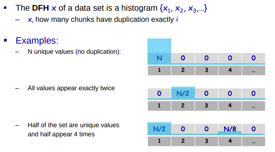
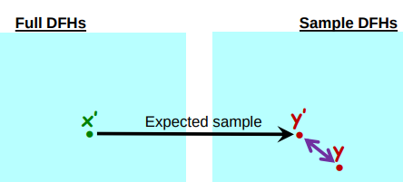
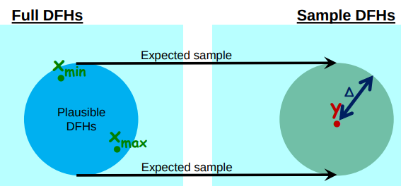

| Venue | Category |
|---|---|
| FAST'16 | Sample + Deduplication |
Estimating Unseen Deduplication - from Theory to Practice 1. SummaryMotivation of this paperEstimating Unseen DeduplicationImplementation and Evaluation2. Strength (Contributions of the paper)3. Weakness (Limitations of the paper)4. Future Works
This paper intends to solve the problem of deduplication estimation, that is given a large dataset and try to understand the potential benfit from deduplication.
Potential customers need this information in order to make informed decisions on whether high-end storage with deduplication is worthwhile for them.
The difficulty stems of deduplication estimation: deduplication is a global property
naive way: need to search across large amounts of data. read a large fraction of the data from disk.
State-of-art countermeasures:
is highly inaccurate in reality (varying from a long range)
requires a large amount of memory and disk operations
The main challenges are to make deduplication algorithms actually applicable and worthwhile in a real world scenario.
In this work, they study the ability to estimate deduplication while not reading the entire dataset.
- understanding the estimation accuracy: what sample size is enough to achieve a good accuracy?
- how to run the estimation algorithm with low memory consummption
- how to combine deduplication and compression
from the DFH, it devises an estimation of the deduplication. Can take a DHF of a full set or a sample of the set 
Rationale: 
It proposes a new approach that can return a range of plausible deduplication ratio rather than a single estimation number returns upper and lower bounds (the actual ratio lies inside the range)

To slove this, it proposes two approaches with around 10MBs of RAM:
Shortcoming: the dataset to be studied needs to be set in advance. (not dynamic)
Only the C chunks that have the highest hash values
- sample uniformly at random over the entire dataset
- without repetitions
- using low memory
- gradual sample
sample a small precent, evaulate, then add more samples if needed
- faster than running a full scan (scan time dominates the running time)
- sample chunks: using larger chunk sizes ( )
Not the cryptographic hash like SHA-1 To ensure the overhead of sample is negligible.
This work gives me the insight that can use a sample of the workload to estimate the whole workload property. This can be used in many scenarios